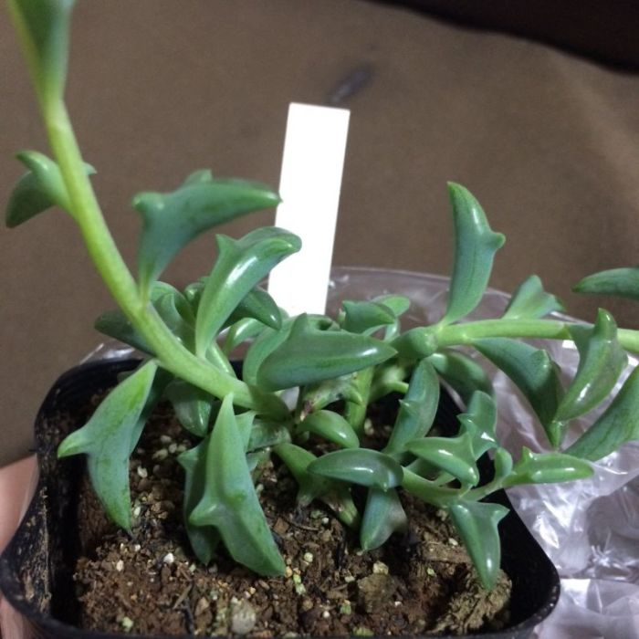

Сегодня филиалками,кактусами,рододендроном и прочей красатой никого не удивишь. Это растение можно увидеть на подоконниках квартир и офисов. Но в царстве флоры ещё достаточно растений,которые выглядят,как пришельцы с другой планеты. Они не прихотливы и при это невероятны!
|  | |
|
|
|
|---|---|---|---|---|
| Суккуленты-дельфины(Senecio peregrinus) | Японский мох маримо (Marimo moss balls) | Неприхотливая трахиандра (Trachyandra) | Крассула умбелла (Crassula umbella) | Молочай тучный (Euphorbia obesa) |
| Научное название растения с листьями , которые напоминают дельфинов - крестовик-перегринус. | Зеленый шарик водоросли в японских семьях принято передавать по наследству, потому что приносит благополучие и удачу в дом. | Африканское чудо напоминает кудри волос,растущие снизу вверх. | Красивое и необычное расстение ,которое сотворила природа. | Экзотическое зеленоватое растение часто путуют с кактусом,хотя колючек у него нет. |
| Нет алергии | Нет алергии | Может быть алергия | Нет алергии | |